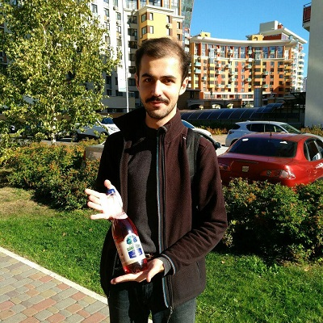
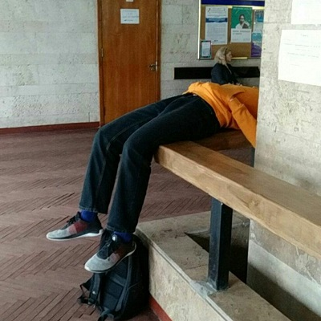
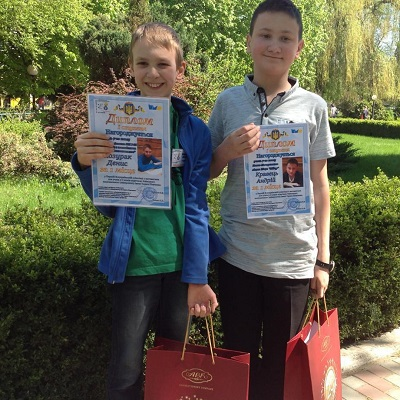
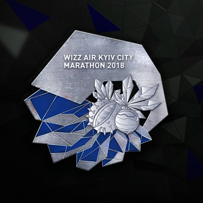
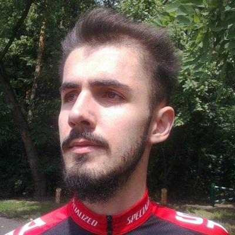
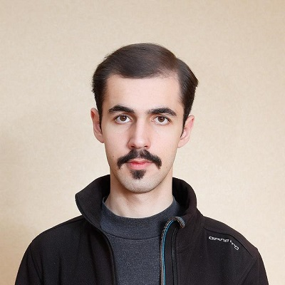

Education
High School
From 2009 to 2016 I studied at physics and mathematics lyceum in Kyiv. I participated in a lot of different competitions, ranging from city geography olympiad and national chemistry olympiad to 2016 International Mathematical Olympiad (IMO). I won many different awards in many different sucjects, even though my main focus always remained on mathematics.
You could have won gold at IMO if you studied more.
University
After high school I entered Taras Shevchenko National University of Kyiv. This choice was motivated by my friends. Our group consisted of two more IMO winners, a couple more national olympiad winners, and some more cool guys. We went to one more olympiad all together, 2017 International Mathematical Olympiad for University Students, where I won another silver medal. After that I got a little tired of participating in olympiads.
University is a free environment: sex, drugs, and rock'n'roll.
Never forget about grades though.
Freedom and Grades
I always considered university as some sort of free environment, not visiting half of my lectures, and sometimes getting to know my instructor's name towards the end of the semester. Nevertheless, I always did all the labwork, and was getting good marks in the end. Consequently, I finished with a GPA of 94.68/100, the best in my group by quite a margin. I graduated with high honors in 2020, now a Bacherlor of Sciences, majored in Applied Mathematics.
going to the last lecture on Friday with a cider
sleeping wherever I can between lectures
Thanks to @me_supreme_being for both shots.
Programming
The beginning
In university I got interested in programming, especially in competitive. It didn't come easy to me, as I failed to get excellent in my freshman pogramming course. I eventually proceeded to get 100/100 in my next programming course, entered Yandex School of Data Analysis after my sophomore year.
Nikita failed to get excellent in his freshman programming course.
Next year he astonished me by solving each and every problem.
First Internship
At the same time in 2018 I started an internship at BetterMe, a fitness and health mobile application with millions of installations and subscriptions, where I worked as a backend engineer, analyst, and even a machine learning engineer in several advertisement-related tasks.
I was surprised to see a 19-year-old college boy
who perfectly understood that industry is driven by money
and not by some abstract romantic teenage ideals.
Yandex School of Data Analysis
After the internship I came back to Yandex School of Data Analysis, completing various courses, ranging from programming languages and advanced mathematical courses to external memory algorithms and natural language processing. I really like this place, as it gathers many people with completely different backgrounds but with one goal of advanced education not available at most post-soviet and european universities.
You are a very cool guy. It will be a pleasure to meet you again
Teaching
Ever since I retired from professional mathematical sport I taught others. Two-time gold IMO medalist Fedir Yudin is the one with whom I interected the most. I also teach at the variety of ukrainian training camps and summer schools.
Nikita influenced Fedir a lot. He brought the initial interest in olympiads.
I also teach online and abroad. Check out my telegram channel with lectures, or my Kazakhstan lectures.
Fedir Yudin
some of my mentees
Languages
Linguistics
I like brain-teasing linguistic challenges. In my school years I even took part in some competitions. I guess I am still mentioned somewhere on a wonderful resource Ling.org.ua as a medalist of some competition. Later on I even composed one problem. You can check its statement in Ukrainian here.
I like solving brain-teasing challenges.
English
I also like learning real languages. However, my approach is rather intuitive and is not advised to use if you want to learn some language quickly. I consider it more like a recreational activity in between working hours. Duo is quite fun if your schedule is not tight. Otherwise I suggest turning to some professional help, especially if you are preparing for some exam, like TOEFL or IELTS.
He got 106 on TOEFL after only several months of learning.
Mainly thanks to his logical reasoning.
Other
I try to take a glimpse of many different languages. In particular, I tried Spanish, French, Polish, and Czech. Helps a lot to unerstand general structures present in all languages. Sometimes even helps to get a feeling of how native speakers think in their language. I bet AIs from nearest future will tie linguistic background to some personality traits.
Sports
I love running and cycling. I took part in two Kyiv city half marathons in the falls of 2018 and 2019, and plan to participate in more events in the future. In the latter years cycling becomes an incresingly popular, fast, and most importantly safe way to move around Kyiv, despite the very slow official approvement of bike routes, and hilarious length measurment manipulations.
I hope one day bikes will be as common as the subway.
I own a Specialized bike and Reebok sneakers — the only ones suitable for my steep foot lift. Took a whole day to find them, but man they are good.
one of my running medals
me on a bike
You look a bit like Tony Stark.
Music
Technical
I am a big fan of music. Honestly, cannot imagine a day without listening to something. I have full-scale speakers at home, and a bunch of headphones. Can suggest ATH-M40x for composing stuff, and ATH-M50x for enjoying stuff.
I cannot imagine him not listening to music for a day.
Genres
I prefer rock, classical, and electronic music, but I am not limited to these. A better sense of my taste can be obtained by listening to my telegram channel. It is mainly for friends, hence not very crowded, but still contains a lot of music (over a thousand songs).
Other
some official photo
some casual photo
They don't look all that different, do they?